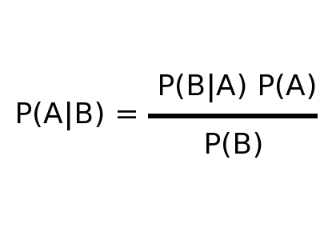

If you have any inkling of budget or time line, Your estimate will be biased
“I’ll tell you how I estimate things. I sit down and figure out how long
I think it would take me to do it. Then I double that time and then I push it up to the next point on the time progression scale.
Were the ‘Time Progress Scale’ starts off: seconds, minuets, hours and days. So if I think something is
going to take me 4 hours to do. I will double it to 8 and then I would say it would take me 8 days
to get it all completely done start to finish. And I’m usually right, because there are so many impediments.
If you are the only one doing it yourself your schedule can be very accurate. Once you have to
involve other people, you might as well just make numbers up. You might as well say
‘I think this will take me blue days to get done’”
Requirements are the key
It’s easy to estimate what you know
It’s hard to estimate what you know you don’t know.
It’s very hard to estimate things that you don’t know you don’t know.
Our new contact form, will have fields for entering a valid first and last name, email, and phone number
Missed place modifiers
Our new contact form, will have fields for first name, last name, email, and phone number. When the form is submitted, all fields will be validated
Wordy expressions
Contact form, fields for: first name, last name, email, and phone number. When submitted all fields are validated
Valid phone numbers
(202) 456-1111
555-1212
212-867-5309
1-800-MATTRES
911
+44 871 984 6352
+852 2280 2898
+91 11 2679 1234
Requirement Smells
Fast, rapid, efficient
valid, including but not limited too, etc, and so on
maximize, minimize, optimize, at least, between, several
simple, easy, quick, user-friendly
reasonable, when necessary
The contact form, has fields for first name, last name, email, and phone number. When the form is submitted, all fields will be validated using the following rules:
All fields will use UTF-8 encoding
First and Last name each will be between 3 and 100 characters long
Email will comply with RFC 822 however will be no longer than 300 characters
Phone number will be no longer than 25 characters and validated against the FooBarPhone REST service
In order to estimate, you must define the parameters of what you are estimating
Tools for Estimation
Historical Data
Dry run / Unit test
Confidence Interval (CI)
“It is better to be roughly right than precisely wrong.”
- John Maynard Keynes
Lets get Calibrated
User Measurement Assumptions
Your problem is not as unique as you think.
You have more data than you think.
You need less data than you think.
An adequate amount of new data is more accessible than you think.
Calibration questions
What is the wingspan of a 747
How far is NY from LA
The average house in the United States uses how many gallons/liters of water per day?
Francis Scott Key wrote the lyrics, but not the music, for the American National Anthem
28 degrees Fahrenheit is colder than -15 degrees Celsius.
America On Line purchased Netscape.
Improve your estimates
Equivalent bet
Repetition
Pros and Cons
Absurdity Test
Answers
211 ft (64 m) What is the wingspan of a 747
2,808 mi (4,519 km)How far is NY from LA
350 ga (1,324 l)The average house in the United States uses how many gallons/liters of water per day?
True Francis Scott Key wrote the lyrics, but not the music, for the American National Anthem
False A 28 degrees Fahrenheit is colder than -15 degrees Celsius
True America On Line purchased Netscape
Fuzzy Logic
Classify feature into size groups: Very Small, Small, Medium, Large, Very Large
Average LOC per Size
Size
Average LOC
Very Small
127
Small
253
Medium
500
Large
1,014
Very Large
1,988
Group A.K.A. Wideband Delphi
Based on the law of large numbers
Bayes Theorem

Prioritizing
T-Shirt Sizing
Development & Technology Cost
Business Value
Prioritization Scale
Importance
Urgency
Important
Not Important
Urgent
High Priority
Don't do these
Not Urgent
Medium Priority
Low Priority
Politics
Manager Resistance
Remove people from the problem
Focus on Interests not Positions
Insist on using objective Criteria
Finial tips
Software Requirements: Practical Techniques for Gathering and Managing Requirements Throughout the Product Development Cycle.
Karl Wiegers
ISBN-13: 978-0735605350
Software Estimation: Demystifying the Black Art: Demystifying the Black Art (Best Practices)
Steve McConnell
ISBN-13: 978-0735605350
How to Measure Anything: Finding the Value of Intangibles in Business